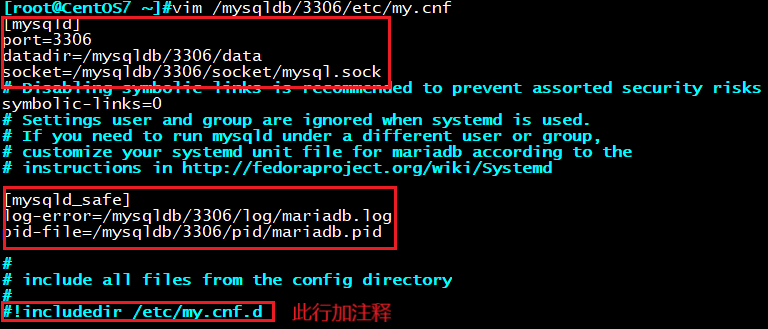

一、MySQL数据库简介
MySQL是一个关系型数据库管理系统，由瑞典MySQL AB 公司开发，目前
属于 Oracle 旗下产品。MySQL 是最流行的关系型数据库管理系统之一，
在 WEB 应用方面，MySQL是最好的 RDBMS (Relational Database Management
System，关系数据库管理系统) 应用软件。
MySQL历史
1979年：TcX公司 Monty Widenius，Unireg
1996年：发布MySQL1.0，Solaris版本，Linux版本
1999年：MySQL AB公司，瑞典
2003年：MySQL 5.0版本，提供视图、存储过程等功能
2008年：Sun 收购
2009年：Oracle收购sun
2009年：Monty成立MariaDB
MySQL和MariaDB
官方网址：
官方文档
版本演变：
MySQL：5.1 –> 5.5 –> 5.6 –> 5.7
MariaDB：5.5 –>10.0–> 10.1 –> 10.2 –> 10.3
MariaDB的特性
插件式存储引擎：也称为“表类型”，存储管理器有多种实现版本，功能和特
性可能均略有差别；用户可根据需要灵活选择,Mysql5.5.5开始innoDB引擎是
MYSQL默认引擎
MyISAM ==> Aria
InnoDB ==> XtraDB
单进程，多线程
诸多扩展和新特性
提供了较多测试组件
开源
下面我们以MariaDB为例，来介绍数据库在Linux系统上的安装
前期准备：
操作系统：CentOS 7.4
环境准备：关闭SELinux安全策略，Iptables防火墙，确认当前主机未安装MySQL或MariaDB其他版本
准备对应的安装包：
MariaDB 10.2.15官方下载页面：https://downloads.mariadb.org/mariadb/10.2.15/
mariadb-10.2.15.tar MariaDB源代码安装包
mariadb-10.2.15-linux-x86_64.tar MariaDB二进制格式安装包
一、实验：使用yum源安装MariaDB 10.2.15
去官网查询，复制yum源，yum install
1登录MariaDB官方网站：http://mariadb.org/
MariaDB 10.2.15下载界面：https://downloads.mariadb.org/mariadb/10.2.15/
2 找到下图所示，点击Repository Configuration Tool.

3 根据自己的系统版本选择相应的选项，就会出现对应的yum源数据库配置
4.yum将数据库配置复制入库文件，并进行安装
安装MariaDB：
yum install mariadb
5.添加安全加固
mysql_secure_installation 运行此脚本,交互式
是否设置root口令 y
是否删除匿名用户 y
是否允许root远程登录 n
是否删除test数据库 y
privilege tables y
二、实验：通用二进制格式安装MariaDB 10.2.15
1.去官网下载：
mariadb-10.2.15-linux-86_64.tar.gz
2.准备用户账号
useradd -r -d /data/mysqldb -s /sbin/nologin mysql
3.解压包到默认安装路径
安装包默认路径：configure –prefix=/usr/local
tar -xvf mariadb-version.tar.gz -C /usr/local/
4.修改文件权限
cd /usr/local
ln -s mariabd-10.2.15-linux-x86_64/ mysql
ll mysql/
chown -R root:root mysql/
5.修改PATH变量，方便mysql目录下的二进制程序执行
ls /usr/local/mysql/bin
echo PATH=/usr/local/mysql/bin:$PATH > /etc/profile.d/mysql.sh
. /etc/profile.d/mysql.sh
6.创建数据库路径
mkdir /data/mysqldb
chown mysql.mysql /data/mysqldb
chmod 770 /data/mysqldb
7.生成系统自带数据库相关文件
cd /usr/local/mysql 必须在此目录下执行
scripts/mysql_install_db –datadir=/data/mysqldb –user=mysql
ll /data/mysqldb/ 确认相关文件是否生成
8.生成mysql配置文件
ll /usr/local/mysql/support-files 可查看数据库自带的各种配置模板
cp /etc/my.cnf /etc/my.cnf.bak 建议备份配置文件
cp my-hug.cnf /etc/my.cnf
vim /etc/my.cnf
[mysqld]
datadir = /data/mysqldb ##添加此行，指定数据库存放路径

9.添加mysql到服务
cp support-files/mysql.server /etc/init.d/mysqld
chkcibfug –add mysqld
service mysqld start
10.添加安全加固
mysql_secure_installation
三、实验：编译安装MariaDB 10.2.15
1.准备好源码安装包
mariadb-10.2.15.tar.gz
2.安装相关依赖包
yum install bison bison-devel zlib-devel libcurl-devel libarchive-devel boost-devel gcc gcc-c++ cmake ncurses-devel gnutls-devel libxml2-devel openssl-devel libevent-devel libaio-devel
3.创建用户
useradd -r -s /sbin/nologin mysql
4.解压缩源码包
tar -xvf mariadb-10.2.15.tar.gz
5.创建数据库路径
mkdir /data/mysqldb
chown mysql.mysql /data/mysqldb
chmod 770 /data/mysqldb
6.cmake编译
cd /mariadb-10.2.15/
cmake . \
-DCMAKE_INSTALL_PREFIX=/app/mysql \
-DMYSQL_DATADIR=/data/mysqldb/ \
-DSYSCONFDIR=/etc \
-DMYSQL_USER=mysql \
-DWITH_INNOBASE_STORAGE_ENGINE=1 \
-DWITH_ARCHIVE_STORAGE_ENGINE=1 \
-DWITH_BLACKHOLE_STORAGE_ENGINE=1 \
-DWITH_PARTITION_STORAGE_ENGINE=1 \
-DWITHOUT_MROONGA_STORAGE_ENGINE=1 \
-DWITH_DEBUG=0 \
-DWITH_READLINE=1 \
-DWITH_SSL=system \
-DWITH_ZLIB=system \
-DWITH_LIBWRAP=0 \
-DENABLED_LOCAL_INFILE=1 \
-DMYSQL_UNIX_ADDR=/app/mysql/mysql.sock \
-DDEFAULT_CHARSET=utf8 \
-DDEFAULT_COLLATION=utf8_general_ci
7．编译安装
make -j 4 && make install
8.准备环境变量
echo ‘PATH=/app/mysql/bin:$PATH’ > /etc/profile.d/mysql.sh
. /etc/profile.d/mysql.sh
9.生成数据库文件
cd /app/mysql/
scripts/mysql_install_db –datadir=/data/mysqldb/ –user=mysql –basedir=/app/mysql
setfacl -R -m u:mysql:rwx /app/mysql/
10.准备配置文件
cp /app/mysql/support-files/my-huge.cnf /etc/my.cnf
11.准备启动脚本
cp /app/mysql/support-files/mysql.server /etc/init.d/mysqld
12.启动服务
chkconfig –add mysqld
service mysqld start
四、实验：实现多实例安装
实验预期：在一台虚拟机上安装三套MariaDB数据库，数据库版本5.5
思路：三套配置文件（日志文件，配置文件，数据库文件），三个不同的端口
1.安装第一个实例
yum install mariadb-server
2.规划目录
mkdir /mysqldb/{3306,3307,3308}/{etc,socket,pid,log,data} –pv
目录结构如下：
[root@CentOS7 ~]#tree /mysqldb/
/mysqldb/
├── 3306
│ ├── data
│ ├── etc
│ ├── log
│ ├── pid
│ └── socket
├── 3307
│ ├── data
│ ├── etc
│ ├── log
│ ├── pid
│ └── socket
└── 3308
├── data
├── etc
├── log
├── pid
└── socket
3.修改目录及文件权限
chown -R mysql.mysql /mysql
4.创建各自数据库文件
mysql_install_db –datadir=/mysqldb/3306/data –user=mysql [–basedir=/usr/ 二进制安装]
mysql_install_db –datadir=/mysqldb/3307/data –user=mysql
mysql_install_db –datadir=/mysqldb/3308/data –user=mysql
5.创建各自配置文件
cp /etc/my.cnf /mysqldb/3306/etc/
6.修改各自配置文件
vim my.cnf
[mysqld]
port=3306
datadir=/mysqldb/3306/data
socket=/mysqldb/3306/socket/mysql.sock
[mysqld_safe]
log-error=/mysqldb/3306/log/mariadb.log
pid-file=/mysqldb/3306/pid/mariadb.pid
#!includefir /etc/my.cnf.d 添加此行注释

参照3306配置文件，将3307,3308配置文件也生成
cp /mysqldb/3306/etc/my.cnf /mysqldb/3307/etc/my.cnf
cp /mysqldb/3306/etc/my.cnf /mysqldb/3308/etc/my.cnf
7.准备启动服务脚本
chmod 700 mysqld 添加执行权限
cp mysqld /mysqldb/3306 /
cp mysqld /mysqldb/3307/
cp mysqld /mysqldb/3308 /
注意修改启动服务脚本中的不同的参数
#!/bin/bash
port=3306
mysql_pwd=””
cmd_path=”/usr/bin”
8.确认系统自带示例停止服务
systemctl stop mariadb
9.启动多实例服务
/mysqldb/{3306,3307,3308}/mysqld start
ss -ntl
10.测试多实例
mysql -S /mysqldb/3308/socket/mysql.sock
MariaBD [(none)]> show variables like ‘%port%’;